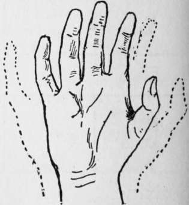

Why Should You Talk The Sign Language?
Description
This section is from the book "The Book Of Woodcraft", by Ernest Thompson Seton. Also available from Amazon: The Book of Woodcraft.
Why Should You Talk The Sign Language?
There are many reasons:
In this code you can talk to any other Scout, without a outsider knowing or understanding.
It makes conversation easy in places when you must not speak aloud, as in school, during music, or by the bedside of the sick.
It is a means of far-signaling much quicker than semaphore or other spelling codes, for this gives one or more words in one sign.
It will enable you to talk when there is too much noise to be heard, as across the noisy streets.
To be issued by Doubleday, Page &Co.
It makes it possible to talk to a deaf person.
It is a wonderful developer of observation.
It is a simple means of talking to an Indian or a Scout of another nationality whose language you do not understand. This indeed is its great merit. It is universal. It deals not with words but with ideas that are common to all mankind. It is therefore a kind of Esperanto already established.
So much for its advantages; what are its weaknesses? Let us frankly face them: It is useless in the dark; It will not serve on the telephone; It can scarcely be written;
In its pure form it will not give new proper names.
To meet the last two we have expedients, as will be seen, but the first two are insurmountable difficulties.
Remember then you are to learn the Sign Language because it is silent, far-reaching, and the one universal language.
Since it deals fundamentally with ideas, we avoid words and letters, but for proper names it is very necessary to know the one-hand manual alphabet, For numbers we use the fingers, as probably did the earliest men who counted.
Yes
The sign for "yes" is so natural that one can see it instinctively made if we offer food to a hungry baby. That is simply a nod. That is if you are near, but far off, make your right hand with all fingers closed except index and thumb which are straight and touching at top, advance, bend toward the left side as though bowing, then returned and straight again.
No
This also is a natural sign, we can see it if we offer bitter medicine to a baby. The sign for "No," when near, is shake the head; but, when too far for that to be seen, hold the closed right hand in front of the body, then sweep it outward and downward, at the same time turn the palm up as though throwing something away.
One Two Three Four.
Five Six Seven Eight.
Nine Ten Eleven Twenty.
Thirty One Hundred One Thousand.
Query
The sign for Question - that is, "I am asking you a question," "I want to know "-is much used and important. Hold up the right hand toward the person, palm forward, fingers open, slightly curved and spread. Wave the hand gently by wrist action from side to side. It is used before, and sometimes after all questions. If you are very near, merely raise the eyebrows.
The following are needed in asking questions:
How Many?
First the Question sign, then hold the left hand open, curved, palm up, fingers spread, then with right digit quickly tap each finger of left in succession, closing it back toward the left palm, beginning with the little finger.
How Much?
Same as How many?
What?
What are you doing? What do you want? What is it? First give Question, then hold right hand palm down, fingers slightly bent and separated, and, pointing forward, throw it about a foot from right to left several times, describing an arc upward.
When?
If seeking a definite answer as to length of time, make signs for Question, How much, and then specify time by sign for hours, days, etc. When asking in general "When" for a date, hold the left index extended and vertical, other and thumb closed, make a circle round left index tip with tip of extended right index, others and thumb closed; and when the index reaches the starting point, stop it and point at tip of left index (what point of shadow?).
QUERY SIGN.
Where?
(What direction) Question, then with forefinger sweep the horizon in a succession of bounds, a slight pause at the bottom of each.
Which?
Question, then hold left hand in front of you with palm toward you, fingers to right and held apart; place the end of the right forefinger on that of left forefinger, and then draw it down across the other fingers.
Why?
Make the sign for Question, then repeat it very slowly.
Who?
Question, and then describe with the right forefinger a small circle six inches in front of the mouth.
Eat
Throw the flat hand several times past the mouth in a curve.
Drink
Hold the right hand as though holding a cup near the mouth and tip it up.
Sleep
Lay the right cheek on the right flat hand.
My, Mine, Yours, Possession, Etc
Hold out the closed fist, thumb up, and swing it down a little so thumb points forward.
House
Hold the flat hands together like a roof.
Finished Or Done
Hold out the flat left hand palm to the right, then with flat right hand chop down past the ends of the left fingers.
Thus "Will you eat?" would be a Question, you eat, but Have you eaten would be, Question, you eat, finished.
Way Or Road
Hold both flat hands nearly side by side, palms up, but right one nearer the breast, then alternately lift them forward and draw them back to indicate track or feet traveling.
Continue to:
- prev: IX. Signaling And Indian Signs
- Table of Contents
- next: Why Should You Talk The Sign Language?. Continued
Tags
bookdome.com, books, online, free, old, antique, new, read, browse, download